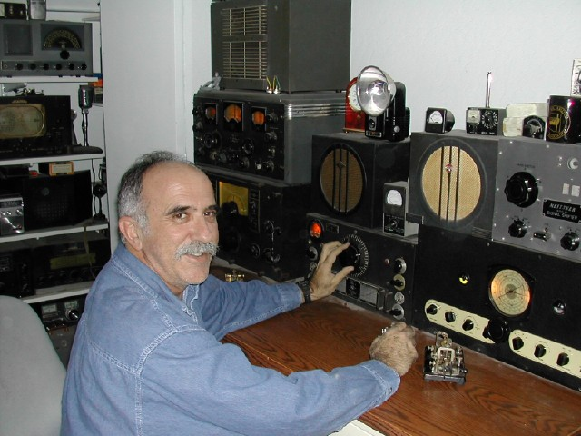

|

Dave at his
station during the 1995 Straight Key Night (SKN). The HRO-5TA1 he
is using belonged to his elmer W6BAM who became a silent key a few
years ago at age 98. W6BAM was first licensed in 1926 and had already
been playing with radio for almost 40 years when I first met him in
1963. He bought the HRO-5TAI upon returning from WWII and that was his
only receiver up into the early 1990's.
To the left of
the HRO is a National RAO-7 and on top of that receiver is a
Hallicrafters SX-28. The other radios are a 1936 RCA ACR-175 and a
Meissner Signal Drifter (Shifter) which was what Dave was transmitting
on during SKN. He has several 1930's RCA receivers also. They are neat
radios and not seen often. Behind him you can see a couple of
Howard's, an RME84 and a Swan 500CX.
|